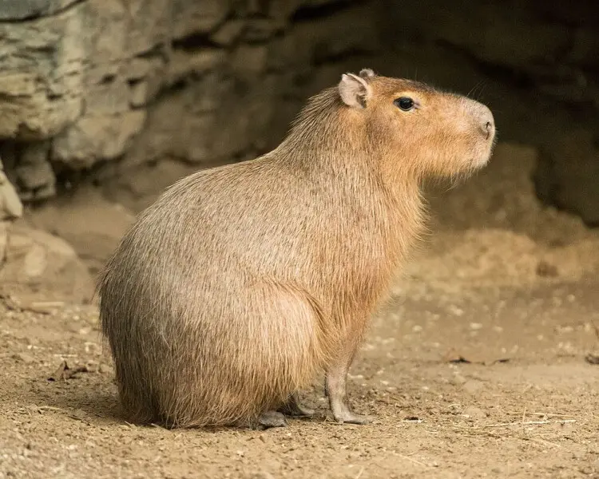

Se alimenta principalmente de plantas acuáticas, gramíneas y otras hierbas palustres. Pero también consumen flores, frutos y semillas, y utiliza la corteza de los árboles para roer y desgastar sus dientes incisivos.
Vive cerca de un cuerpo de agua, debe haber áreas cercanas para pastorear y alimentarse y zonas secas para descansar y tener a las crias
Es un animal gregario, vive en grupos numerosos de entre 6 a 30 individuos. Suelen organizar el espacio donde viven.Pueden comunicarse entre ellos emitiendo señales.
Se pueden reproducir durante todo el año, pero sobre todo en primavera-verano. Alcanzan su madurez sexual entre el año y medio y dos de vida y el tipo de reproducción que llevan involucra a un macho con varias hembras.